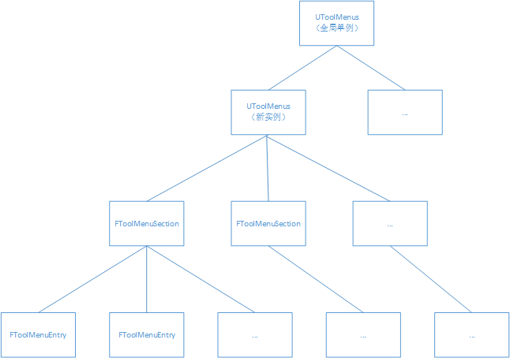
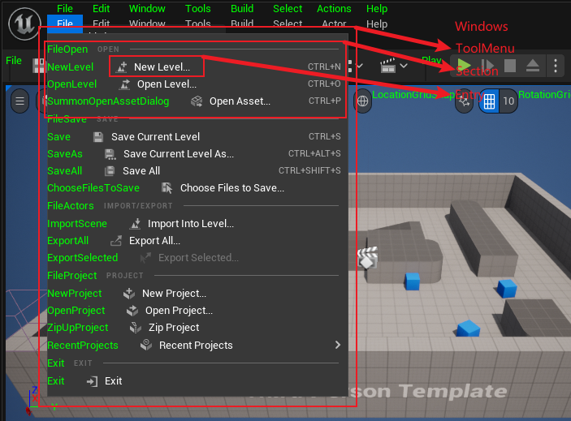
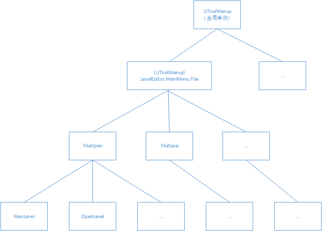
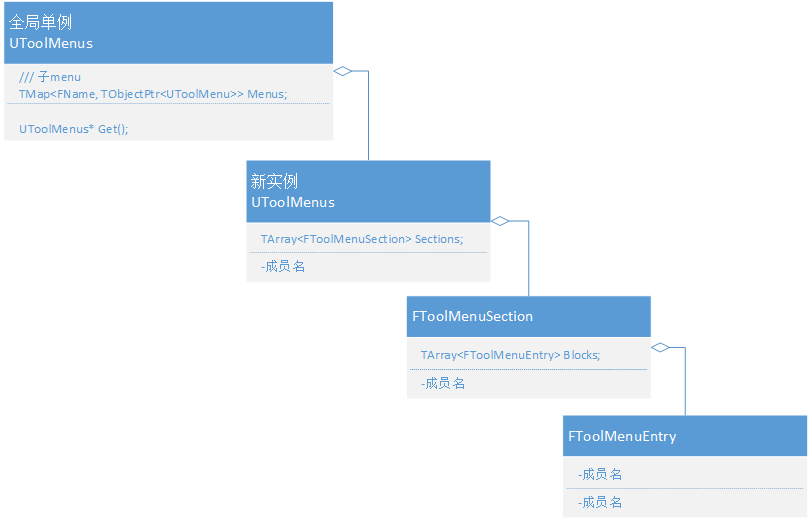

# 一、前言
# 二、实用的工具
- 显示 UI 扩展点：Edit =》Editor Preferences =》General =》Miscellaneous =》勾选 Display UI Extension Points
- 可以使用插件、模块、甚至更改源码来扩展这些点的 UI 功能！
- Widget Reflector：Tools =》Debug =》Widget Reflector
- 该工具可以查看 UI 的结构、定位源码、Widget 的名字等等信息，用来调试和追踪 UI 非常实用！
- Widget Reflector 官方教程
- SlateDebugger：控制台调试命令。例如：启用和禁用 Slate 输入，记录输出 Slate 事件、绘制和停止绘制 Slate 等等
# 三、编辑器 UI 扩展简述
# 1. 构建 UI 层级结构
- 编辑器使用 树状结构 来构建 UI 层级关系。
 - 例子：

 - 树状结构
- 根节点：UToolMenu 单例
- 容器（非叶节点、非根节点）及 UI 扩展点：UToolMenu、UToolMenuSection
- 叶子节点：UToolMenuEntry
- 如何构成树状结构？
- 名字的构成（字符串 + .）。每层都有一个专属的名字，父层和子层用点号分隔，效果如下所示：
- LevelEditor.MainMenu.File.FileOpen.NewLevel
- LevelEditor.MainMenu.File.FileOpen.OpenLevel
- LevelEditor.MainMenu.File.FileSave.Save
- LevelEditor.MainMenu.File.Edit
- 虚幻引擎的 GamePlayTag 和 自动化测试 的层级关系也是通过 “字符串 + .” 连接实现的！
- 代码的构成：其实就是数组构成的树状层级结构

# 2. 根据层级结构生成 UI
- 步骤：
- 构建层级结构：创建 UToolMenu，ToolMenuSection 等容器（UI 扩展点），向里面添加容器（俗称：套娃）或者子节点。
- Generate Widget: 当 Widget 使用时就会根据上面构建的层级结构，生成 Widget，加入到 Slate 架构中。
- 结论：所以只要在 Generate Widget 之前，将自定义层级添加到容器（UI 扩展点）中，即可实现编辑器扩展的关键一步！
- 所幸插件或模块的初始化在编辑器所有 UI 的 Generate 之前，通常使用它们扩展编辑器功能，避免修改源码！
# 四、编辑器扩展 - 插件和模块 - 基础
# 1. 插件和模块基础
- 插件属于模块。
- 插件官方教程
- 模块官方教程 - 游戏模块
- 模块官方教程 - 创建 Gameplay 模块
- 本文关注的是编辑器扩展，基础使用教程在网络上很多，这里就不在赘述！
# 2. Slate
- Slate 是虚幻引擎的 UI 架构，所以想要修改现有的编辑器 UI 结构或者添加新的编辑器 UI 功能等等，都绕不开它！
- 幸运的是虚幻引擎开源且官方文档逐渐完善，你可以通过官方文档和引擎源码学习 Slate 的使用。虚幻官方文档：
虚幻官方文档 - Slate
# 五、编辑器扩展 - 插件和模块 - 简单试一试
# 1. 扩展步骤：
- 创建插件或模块。
- 找到合适的 UI 扩展点（容器）。
- 向 UI 扩展点加入自定义的 UI 层级结构，并为其注册回调。
- 实现回调功能，如：打开一个窗口。
- 在窗口生成回调中加入 Slate 代码，生成窗口内内容 Widget。
# 2. 编辑器扩展 - 插件基础代码分析
void FTestPluginsModule::StartupModule()
{
/// 当模块被加载时执行
// This code will execute after your module is loaded into memory; the exact timing is specified in the .uplugin file per-module
FTestPluginsStyle::Initialize();
FTestPluginsStyle::ReloadTextures();
/// 创建UI命令
FTestPluginsCommands::Register();
PluginCommands = MakeShareable(new FUICommandList);
/// 绑定插件按钮回调
PluginCommands->MapAction(
FTestPluginsCommands::Get().OpenPluginWindow,
FExecuteAction::CreateRaw(this, &FTestPluginsModule::PluginButtonClicked),
FCanExecuteAction());
/// 绑定UToolMenus回调，在回调中向UI的层级结构添加自定义的层级结构！！！！
UToolMenus::RegisterStartupCallback(FSimpleMulticastDelegate::FDelegate::CreateRaw(this, &FTestPluginsModule::RegisterMenus));
/// 注册一个名为TestPluginsTabName的窗口，并绑定一个窗口内内容生成回调OnSpawnPluginTab，用来生成自定义Widget
FGlobalTabmanager::Get()->RegisterNomadTabSpawner(TestPluginsTabName, FOnSpawnTab::CreateRaw(this, &FTestPluginsModule::OnSpawnPluginTab))
.SetDisplayName(LOCTEXT("FTestPluginsTabTitle", "TestPlugins"))
.SetMenuType(ETabSpawnerMenuType::Hidden);
}
void FTestPluginsModule::ShutdownModule()
{
/// 清理
// This function may be called during shutdown to clean up your module. For modules that support dynamic reloading,
// we call this function before unloading the module.
UToolMenus::UnRegisterStartupCallback(this);
UToolMenus::UnregisterOwner(this);
FTestPluginsStyle::Shutdown();
FTestPluginsCommands::Unregister();
FGlobalTabmanager::Get()->UnregisterNomadTabSpawner(TestPluginsTabName);
}
TSharedRef<SDockTab> FTestPluginsModule::OnSpawnPluginTab(const FSpawnTabArgs& SpawnTabArgs)
{
/// 第二步： Generate Widget
///窗口生成回调函数
/// Slate，生成Widget，加入到新打开的窗口
/// 这里只生成了一个Text文本，提示信息！
FText WidgetText = FText::Format(
LOCTEXT("WindowWidgetText", "Add code to {0} in {1} to override this window's contents"),
FText::FromString(TEXT("FTestPluginsModule::OnSpawnPluginTab")),
FText::FromString(TEXT("TestPlugins.cpp"))
);
return SNew(SDockTab)
.TabRole(ETabRole::NomadTab)
[
// Put your tab content here!
SNew(SBox)
.HAlign(HAlign_Center)
.VAlign(VAlign_Center)
[
SNew(STextBlock)
.Text(WidgetText)
]
];
}
void FTestPluginsModule::PluginButtonClicked()
{
/// 打开窗口TestPluginsTabName
FGlobalTabmanager::Get()->TryInvokeTab(TestPluginsTabName);
}
void FTestPluginsModule::RegisterMenus()
{
/// 第一步：找到UI扩展点（容器），向里面注册自定义成绩关系，并添加UI命令回调
// Owner will be used for cleanup in call to UToolMenus::UnregisterOwner
FToolMenuOwnerScoped OwnerScoped(this);
{
/// 扩展Level窗口下拉菜单
/// 得到窗口的UToolMenu
UToolMenu* Menu = UToolMenus::Get( )->ExtendMenu( "LevelEditor.MainMenu.Window" );
{
/// 找到子扩展点WindowLayout（容器）
FToolMenuSection& Section = Menu->FindOrAddSection( "WindowLayout" );
/// 向WindowLayout容器，添加一个一个叶节点按钮，并添加回调命令OpenPluginWindow
Section.AddMenuEntryWithCommandList( FTestPluginsCommands::Get( ).OpenPluginWindow, PluginCommands );
}
}
{
/// 同上 得到工具栏UI扩展点LevelEditorToolBar
UToolMenu* ToolbarMenu = UToolMenus::Get( )->ExtendMenu( "LevelEditor.LevelEditorToolBar" );
{
/// 找到子扩展点Settings
FToolMenuSection& Section = ToolbarMenu->FindOrAddSection( "Settings" );
{
/// 向Setting里面添加自定义的层级结构，就是多加了个按钮
FToolMenuEntry& Entry = Section.AddEntry( FToolMenuEntry::InitToolBarButton( FTestPluginsCommands::Get( ).OpenPluginWindow ) );
Entry.SetCommandList( PluginCommands );
}
}
}
{
/// 这是博主的扩展测试，道理同上！
/// 找到File的UToolMenu
UToolMenu* Menu = UToolMenus::Get( )->ExtendMenu( "LevelEditor.MainMenu.File" );
/// 找到子节点FileOpen
FToolMenuSection& OpenSection = Menu->FindOrAddSection( "FileOpen" );
FToolMenuInsert InsertPos( NAME_None, EToolMenuInsertType::First );
/// 增加个新叶子节点按钮并绑定回调
FToolMenuEntry& Entry = OpenSection.AddMenuEntry( FTestPluginsCommands::Get( ).OpenPluginWindow );
Entry.InsertPosition = InsertPos;
Entry.SetCommandList( PluginCommands );
}
}
# 六、结语
- 更深入的了解，敬请期待编辑器扩展的实战篇和源码篇！